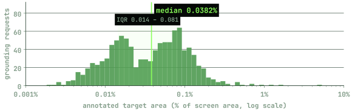
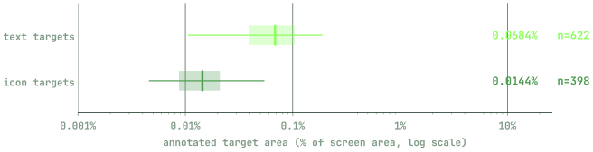
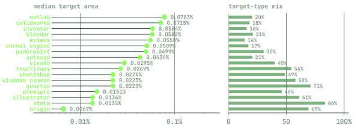
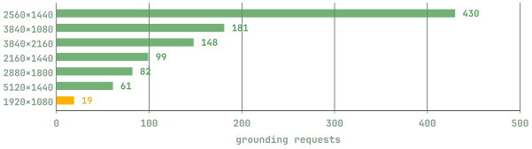
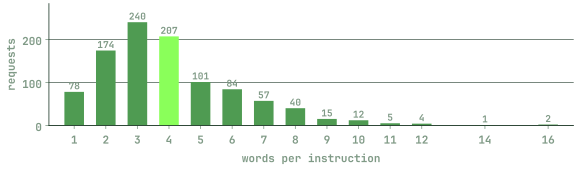

The median target covers 0.0382% of the screen.
This report covers the ScreenSpot-Pro Windows subset. It sets out what the 1,020 requests contain, whether the table can be trusted, and what the numbers say about target size. The counts come from the released annotations and from the screenshots themselves.
One table holds 1,020 requests from 17 applications.
The table merges 17 raw annotation files into 1,020 rows. A row is one request: a screenshot, an instruction, and the box drawn around the matching element.
What a request is
The release records no outcome label, confidence score or timestamp. Each measure below describes the task, not a model's attempt at it.
The industry groups are uneven
Creative holds 297 requests, or 29.1%. Dev holds 45, all of them in a single application. Averaging by group therefore mixes very different sample sizes.
Fourteen pairs repeat a file
Each pair of files is byte-identical and carries two different instructions. Both requests stay in the table, but they are not independent observations.
- Requests
- 1,020
- Applications
- 17
- Industry groups
- 6
- Distinct byte contents
- 1,006
A byte comparison finds the 14 repeated files. It says nothing about whether the remaining screenshots look alike.
The merged table matches the source annotation in every field.
The merge compares 14 fields against the 17 raw files and all 1,020 rows agree. No row is missing on either side. Every image also decodes as RGB at the size the table records.
| Merged rows that match the raw record | 1,020 |
|---|---|
| Raw rows without a merged row | 0 |
| Merged rows without a raw record | 0 |
| Missing values | 0 |
| Duplicate rows and duplicate ids | 0 |
| Images that decode as RGB | 1,020 |
| Decoded sizes that differ from the recorded size | 0 |
- Fields compared
- 14
- Exact matches
- 1,020
- Unmatched rows
- 0
- Duplicate ids
- 0
Three repairs touch 102 rows. No row is dropped.
Each repair was counted before it was applied. The cleaned table keeps all 1,020 rows and adds 15 derived columns; the source file is never modified.
Platform label
The release marks 93 MATLAB captures as macos. The screenshots show a Windows taskbar and a D: path, and the paper lists MATLAB under Windows, so the label becomes windows.
Instruction whitespace
Eight instructions begin, end or repeat a space. The text was stripped and collapsed before any character count was taken from it.
Bounding box coordinate
One box starts at y = −1, above the top edge of the screen. The value was clamped to 0, which puts the box on the edge.
Half the targets cover less than 0.0382% of the screen.
Areas run from 0.0021% to 4.73%, more than three orders of magnitude. Skewness is 20.3, so the median is the honest summary and the comparisons use rank tests.
- Median
- 0.0382%
- Interquartile range
- 0.014–0.081
- Skew
- 20.3
- Mean
- 0.0653%

Target area for all 1,020 requests in 58 logarithmic bins. A bar's height is the number of requests in that band.
An icon is 4.7 times smaller than a text target.
The median icon covers 0.0144% of the screen against 0.0684% for a text target. The gap holds inside almost every application that contains both icons and text.
- Text median
- 0.0684%
- Icon median
- 0.0144%
- Ratio
- 4.7×
- Text and icon requests
- 622, 398

Boxes give the interquartile range and whiskers run from the 5th to the 95th percentile.
Median size varies 11.8 times across applications.
Origin's median is the smallest at 0.0067% and MATLAB's the largest at 0.0783%. Part of that spread is interface style and part is the target mix.
- Spread
- 11.8×
- Variance between applications
- 16.9%
- Variance within applications
- 83.1%
- Icon share: Stata, EViews
- 84%, 14%

Each dot is one application's median; the bars show its icon share.
Resolution cannot be separated from application here.
Seven fixed resolutions, and 15 of the 17 applications were captured at only one of them. 1920×1080 carries 19 requests, and with resolution locked to application this analysis estimates no resolution effect.
- Resolutions
- 7
- Single-resolution apps
- 15 / 17
- Requests at 1920×1080
- 19
- Pooled rank correlation
- −0.088

Instruction length does not predict the target.
The median instruction runs to 4 words and 20 characters, and 78 requests use a single word. Only 25 instructions name a position.
- Median length
- 4 words
- Median characters
- 20
- Give a position
- 2.5%
- Association with area
- −0.023

Words per instruction across all 1,020 requests, after whitespace was normalized.
Four decisions follow from these measurements.
Use the median, not the mean
The distribution is skewed at 20.3. A mean would describe a target that few requests contain.
Report icons and text apart
The two differ by 4.7 times in median area, so one coefficient across both would be misleading.
Keep application in every model
16.9% of the variance in log target area sits between applications and 83.1% within them.
Do not use resolution as a feature
15 of 17 applications use a single resolution, so the corpus cannot separate the two.
Li, K., Meng, Z., Lin, H., Luo, Z., Tian, Y., Ma, J., Huang, Z., & Chua, T.-S. (2025). ScreenSpot-Pro: GUI grounding for professional high-resolution computer use. arXiv:2504.07981. doi.org/10.48550/arXiv.2504.07981.
Data: likaixin/ScreenSpot-Pro, MIT licence.